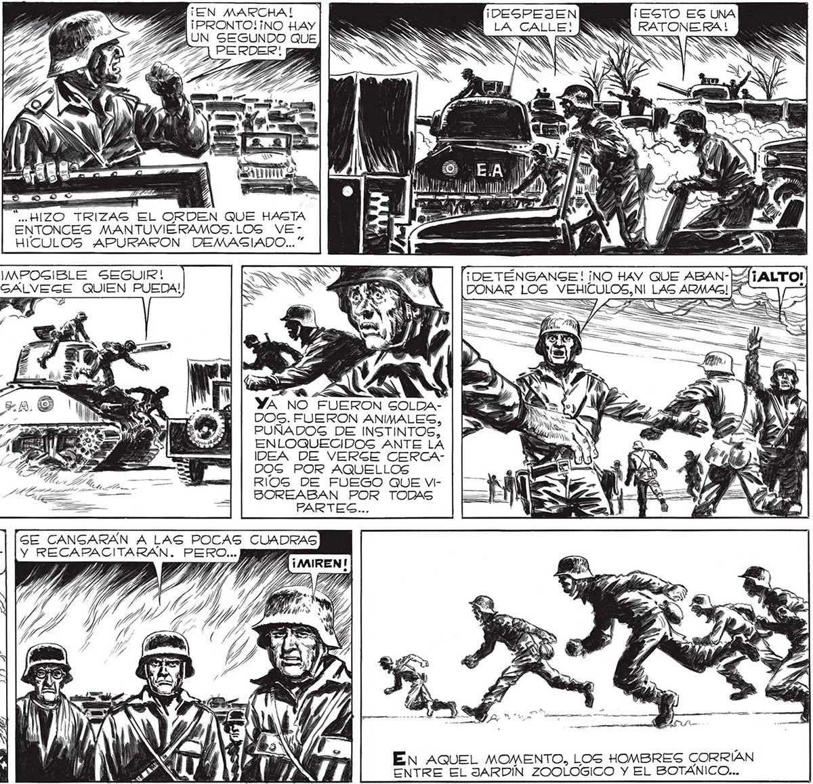

204 - ¡EN MARCHA | A ¡DEGPEJEN ¡ESTO ES UNA AUN SEGUNDO QUE] E ÁS S . PERDER! “HASTA AQUEL MOMENTO, EN GENERAL, LA DISCIPLINA, USTÉDES LO CABEN BIEN,HABÍA SIDO MARAVILLOSA, HEROICA. PERO VER AQUEL INCENDIO QUE NOS ACOGABA, AQUELLOS RÍOS DE LLAMAS QUE ViSOREABAN BUSCANDONOS.. AN PON pS] A (SIS AN A a a; a] X A) AA ys = . las AN Y mM ' qe 4, y 2 e NOE y ener” ó HIZO. TRIZAG EL ORDEN QUE HASTA E ENTONCES MANTUVIÉRAMOS. LOS VvEHICULOS APURARON DEMASIADO... ¡MPOGIBLE SEGUIR! SS QUIEN PUEDA! SE EMBOTELLARON AL QUERER ESCAPAR DE PRIGA POR LAS HERAS, LA ÚNICA SALIDA QUE NOG QUEDABA DE AQUEL INCENDIO QUE ERA LA PLAZA.EL EMBOTELLAMIENTO TRAJO EL PANICO.” d YA NO FUERON GOLDADOS. FUERON ANIMALES, PUÑADOS DE INSTINTOS, ENLOQUECIDOS ANTE LA IDEA DE VERSE CERCADOG POR AQUELLOS RIOS DE FUEGO QUE VIBOREABAN POR TODAS PARTES... QUIZA GEA LO MEJOR, SEÑOR... LA CALLE PARECE LIBRE... GE CANGARAN A LAS POCAS CUADRAS Y RECAFACITARAN. PERO... Ja 7 7 MIT / Y / DN EG y PP, se EN AQUEL MOMENTO, LOS HOMBRES CORRÍAN ENTRE EL JARDIN ZOOLOGICO Y EL BOTÁNICO...
